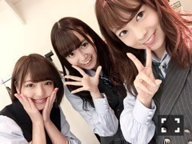
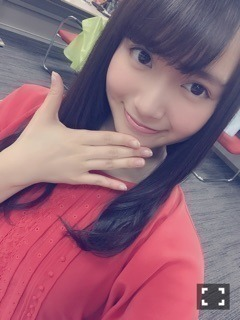
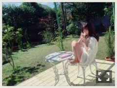

| 2016/05 22 Sun | ひめたん-0o0-その638 |
一番最近の私。
今日午後17時くらいの顔(・∀・)

テレビ愛知
「千原せいじのバズ☆ドルwith松井玲奈」
収録してきました！
公開収録パートに
参加してくださったみなさん
ありがとうございました(^o^)
玲奈さんがおやすみということで
私たちがゲストに呼ばれたんですね！
お会いしたかったな～
せいじさんとは初めましてでしたが
気さくにお話して下さって
とっても楽しかったです( ˆωˆ )
そしてたくさんのアイドルさんと
共演させて頂けて刺激を受けました！
私ももっと頑張らなきゃな～
ロケもしてきたので
オンエア楽しみにしててね～
日曜の夜は、らじらー！サンデー
次回のゲストは声優アーツに豊永利行さん、
乃木坂から深川麻衣ちゃんの登場です！
募集中のメールテーマは
◯まいまいへの応援メッセージ
◯怒らないはずのまいまいが大激怒！！
一体何があった？
◯リインカネーション 私は誰？
◯言葉の贈り物対決リターンズ
大喜利が多いですね～(・∀・)ニヤニヤ
まいまいは卒業前、
最後のらじらー！出演になるのかな。
この日は幕張メッセで個握もあります
参加する方もできない方も
皆さん是非聞いて下さいね！
おたよりの宛先はこちら

2ndアルバム「それぞれの椅子」
いよいよ5/25発売です(^o^)
新録曲の中では個人的に
「きっかけ」「口約束」
「かき氷の片想い」
「失恋したら、顔を洗え！」が好き♡
基本的に11th以降の楽曲が
たくさん収録されているのですが
私、前作から大切な曲が増えたので
アルバムとして形になるのが嬉しいです！
Type-CのM11～M15なんて
一気に聴いたら多分泣く。

～お知らせ～
5/30 月刊エンタメ
6/6 TopYell
6/10 マーキー
6/15 EX大衆
それから、もう少ししたら
お知らせできそうなものもいくつか。
先週は嘘つきました、
今週からほんとに
NOGIBINGO!6 復帰します( >_< )
#7ですね、オークションですね。

(＊´・ω・＊)
コメント(538)
2016/05/22 23:30